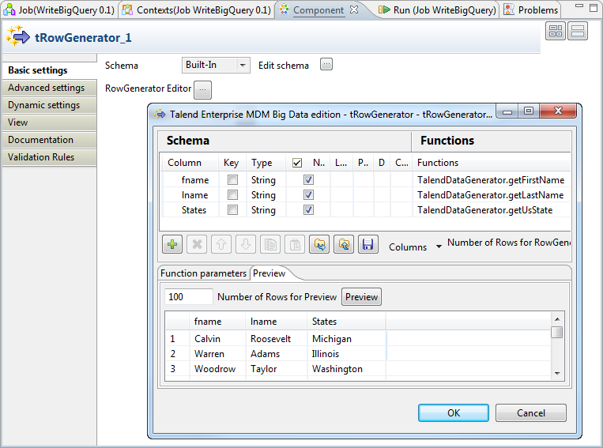
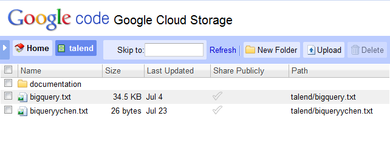

Avertissement
Ce composant est disponible dans la Palette du Studio si vous avez souscrit à l'édition correspondante de Talend Big Data Studio.
|
Famille de composant |
Big Data / Google BigQuery | |
|
Fonction |
Le tBigQueryOutput écrit les données qu'il reçoit dans un répertoire spécifié par l'utilisateur et transfère les données dans Google BigQuery via Google Cloud Storage. | |
|
Objectif |
Ce composant transfère les données fournies par le composant précédent dans Google BigQuery. | |
|
Basic settings |
Schema et Edit Schema |
Un schéma est une description de lignes, il définit le nombre de champs qui sont traités et passés au composant suivant. Le schéma est soit local (Built-in), soit distant dans le Repository. Si vous utilisez Talend Open Studio for Big Data, seul le mode Built-in est disponible. |
|
|
Property type |
Built-in : Le schéma est créé et conservé ponctuellement pour ce composant seulement. Voir également le Guide utilisateur de Talend Data Integration Studio. |
|
|
|
Repository : Le schéma existe déjà et il est stocké dans le Repository. Ainsi, il peut être réutilisé. Voir également le Guide utilisateur de Talend Data Integration Studio. Si vous utilisez Talend Open Studio for Big Data, seul le mode Built-in est disponible. |
|
Local filename |
Parcourez votre système ou saisissez le chemin d'accès au fichier dans lequel vous souhaitez écrire les données reçues. | |
|
Append |
Cochez cette case pour ajouter des lignes aux données existant dans le fichier spécifié dans le champ Local filename. | |
|
Connection |
Client ID et Client secret |
Collez l'ID du client et son mot de passe ("secret") créés et visibles dans l'onglet API Access du projet hébergeant les services BigQuery et Cloud Storage à utiliser. |
|
Project ID |
Collez l'ID du projet hébergeant le service BigQuery à utiliser. L'ID par défaut de ce projet se trouve dans l'URL de la console d'API Google. Vous pouvez également l'obtenir en passant votre curseur sur le nom du projet dans l'outil BigQuery Browser. | |
|
Authorization code |
Collez le code d'autorisation fourni par Google pour l'accès en cours de construction. Pour obtenir le code d'autorisation, vous devez exécuter le Job utilisant ce composant. Lorsque l'exécution du Job est en pause pour afficher une URL, vous devez vous rendre à l'URL donnée afin de copier le code d'autorisation. | |
|
Dataset |
Saisissez le nom de l'ensemble de données dans lequel vous souhaitez transférer des données. | |
|
Table |
Saisissez le nom de la table dans laquelle vous devez transférer les données. Si la table n'existe pas, cochez la case Create the table if it doesn't exist. | |
|
Action on table |
Sélectionnez l'action à effectuer dans la liste déroulante lors du transfert des données dans la table cible. Les actions disponibles sont :
| |
|
Google storage configuration |
Access key et Access secret |
Collez les informations d'authentification obtenues de Google pour envoyer des requêtes à Google Cloud Storage. Ces clés peuvent être consultées dans la vue Interoperable Access, sous l'onglet Google Cloud Storage du projet. |
|
Bucket |
Saisissez le nom du bucket, le conteneur Google Cloud Storage contenant les données à transférer à Google BigQuery. | |
|
File |
Saisissez le chemin d'accès au répertoire des données stockées dans Google Cloud Storage devant être transférées à BigQuery. Si les données ne sont pas dans Google Cloud Storage, ce répertoire est utilisé comme destination intermédiaire avant le transfert des données à BigQuery. | |
| Header |
Configurez la valeur pour ignorer l'en-tête des données transférées. Par exemple, saisissez 0 afin de n'ignorer aucune ligne, si vos données ne contiennent pas d'en-tête. | |
|
Die on error |
Cette case est décochée par défaut, afin d'ignorer les lignes en erreur et de terminer le traitement avec les lignes sans erreur. | |
| Advanced settings |
token properties File Name |
Saisissez le chemin d'accès ou parcourez votre système jusqu'au fichier de jeton à utiliser. Lors de la première exécution du Job avec le code Authorization code de Google BigQuery, vous devez saisir dans ce champ le répertoire et le nom du fichier contenant le nouveau jeton (refresh token) à créer et à utiliser. Si ce fichier de jeton a été créé et que vous devez le réutiliser, vous devez spécifier son répertoire ainsi que le nom du fichier dans ce champ. Si vous saisissez uniquement le nom du fichier de jeton, le studio considère que le répertoire de ce fichier est la racine du dossier du studio. Pour plus d'informations concernant le refresh token, consultez le manuel de Google BigQuery. |
|
Field Separator |
Saisissez un caractère, une chaîne de caractères ou une expression régulière pour séparer les champs des données transférées. | |
| Create directory if not exists |
Cochez cette case pour créer le répertoire que vous avez défini dans le champ File pour Google Cloud Storage, s'il n'existe pas. | |
|
|
Custom the flush buffer size |
Saisissez le nombre de lignes à traiter avant de libérer la mémoire. |
|
Check disk space |
Cochez cette case pour retourner une exception durant l'exécution si le disque est plein. | |
|
Encoding |
Sélectionnez l’encodage à partir de la liste ou sélectionnez Custom et définissez-le manuellement. | |
|
tStatCatcher Statistics |
Cochez cette case pour collecter les données de log, aussi bien au niveau du Job qu’au niveau de chaque composant. | |
|
Utilisation |
Ce composant est un composant de sortie. Il reçoit les données du composant précédent, comme le tFileInputDelimited, le tMap ou le tMysqlInput. | |
Ce scénario utilise deux composants pour écrire des données dans Google BigQuery.
Dans la perspective Integration du Studio, créez un Job vide, nommé par exemple WriteBigQuery, depuis le nœud Job Designs de la vue Repository.
Pour plus d'informations concernant la création d'un Job, consultez le Guide utilisateur de votre Studio d'intégration.
Déposez un tRowGenerator et un tBigQueryOutput dans l'espace de modélisation graphique.
Le composant tRowGenerator génère les données à transférer dans Google BigQuery, dans ce scénario. Dans un cas d'utilisation réelle, vous pouvez utiliser d'autres composants, comme le tMysqlInput ou le tMap à la place du tRowGenerator, afin de créer un processus plus complexe pour préparer vos données à transférer.
Connectez les composants à l'aide d'un lien Row > Main.
Double-cliquez sur le tRowGenerator pour ouvrir sa vue Component.
Cliquez sur RowGenerator Editor pour ouvrir l'éditeur.
Cliquez trois fois sur le bouton
 pour ajouter trois lignes à la table Schema.
pour ajouter trois lignes à la table Schema.Dans la colonne Column, saisissez le nom de votre choix pour chacune des lignes. Par exemple, nommez les lignes fname, lname et States.
Dans la colonne Functions, sélectionnez TalendDataGenerator.getFirstName pour la ligne fname, TalendDataGenerator.getLastName pour lname et TalendDataGenerator.getUsState pour la ligne States.
Dans le champ Number of Rows for RowGenerator, saisissez, 100, par exemple, afin de définir le nombre de lignes à générer.
Cliquez sur OK pour valider les modifications.
Procédure 1.4. Créer l'accès à BigQuery
Double-cliquez sur le tBigQueryOutput pour ouvrir sa vue Component.

Cliquez sur Sync columns afin de récupérer le schéma du composant précédent.
Dans le champ Local filename, saisissez le chemin d'accès au répertoire dans lequel vous souhaitez créer le fichier à transférer dans BigQuery.
Dans votre navigateur Web, rendez-vous sur la page de la console Google APIs afin d'accéder au projet Google hébergeant les services BigQuery et Cloud Storage à utiliser.
Cliquez sur l'onglet API Access pour ouvrir la vue correspondante.
Dans la vue Component du Studio, collez, dans les champs correspondants, l'ID Client, le mot de passe Client et l'ID du projet, disponibles dans la vue API Access.
Dans le champ Dataset, saisissez le nom de l'ensemble de données dans lequel vous souhaitez transférer des données. Dans ce scénario, il est nommé documentation.
L'ensemble de données doit exister dans BigQuery. La capture d'écran suivante présente l'ensemble de données utilisé dans ce scénario.

Dans le champ Table, saisissez le nom de la table dans laquelle vous souhaitez écrire les données, par exemple, UScustomer.
Si la table n'existe pas dans votre BigQuery, sélectionnez Create the table if it doesn't exist.
Dans le champ Action on data, sélectionnez l'action. Dans cet exemple, sélectionnez Truncate afin de vider le contenu, s'il y en a un, de la table cible et de la peupler à nouveau avec les données transférées.
Procédure 1.5. Créer l'accès à Cloud Storage
Dans votre navigateur Web, rendez-vous sur la page de la console Google APIs afin d'accéder au projet Google hébergeant les services BigQuery et Cloud Storage à utiliser.
Cliquez sur Google Cloud Storage > Interoperable Access pour ouvrir la vue correspondante.
Dans la vue Component du Studio, collez, dans les champs correspondants, la clé Access, le mot de passe Access, disponibles dans la vue Interoperable Access.
Dans le champ Bucket, saisissez le chemin d'accès au bucket dans lequel stocker les données transférées. Dans cet exemple, le bucket se nomme talend/documentation
Il doit exister dans le répertoire de Cloud Storage.
Dans le champ File, saisissez le chemin d'accès au répertoire de Google Clould Storage dans lequel recevoir et créer le fichier à transférer dans BigQuery. Dans ce scénario, saisissez gs://talend/documentation/biquery_UScustomer.csv. Le nom du fichier doit être le même que celui défini dans le champ Local filename.
Note
Dépannage : si vous rencontrez des problèmes comme Unable to read source URI concernant le fichier stocké dans Google Cloud Storage, vérifiez que le nom du fichier est bien le même dans les deux champs.
Saisissez 0 dans le champ Header afin de prendre toutes les lignes en compte dans les données transférées.
Procédure 1.6. Obtenir le code d'autorisation
Dans la vue Run du Studio, cliquez sur Run pour exécuter le Job. L'exécution se met en pause à un moment, pour afficher dans la console l'URL à utiliser pour obtenir le code d'autorisation.
Rendez-vous à l'URL, dans votre navigateur Web et copiez le code d'autorisation affiché.
Dans la vue Component du composant tBigQueryOutput, collez le code dans le champ Authorization Code.